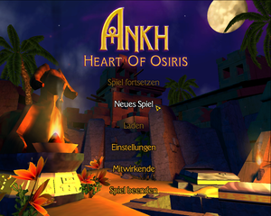
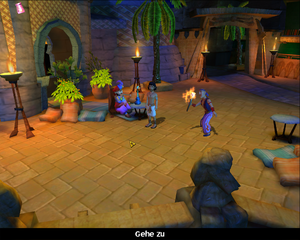
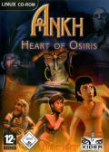

Ankh - Herz des Osiris
Dieser Artikel wurde für die folgenden Ubuntu-Versionen getestet:
Ubuntu 14.04 Trusty Tahr
Zum Verständnis dieses Artikels sind folgende Seiten hilfreich:
Ankh - Herz des Osiris  - Assil ist zurück! Und mit ihm der ganze Haufen verrückter Ägypter. Doch auch Osiris lässt sich einen erneuten Auftritt nicht entgehen. Wird der Gott der Toten die Welt der Lebenden wieder betreten? Wird die unerschrockene Thara Assil wieder aus der Patsche helfen müssen? Entscheide selbst!
- Assil ist zurück! Und mit ihm der ganze Haufen verrückter Ägypter. Doch auch Osiris lässt sich einen erneuten Auftritt nicht entgehen. Wird der Gott der Toten die Welt der Lebenden wieder betreten? Wird die unerschrockene Thara Assil wieder aus der Patsche helfen müssen? Entscheide selbst!
Eine völlig neue, verrückte Geschichte in neuen und bekannten faszinierenden Locations - Neue, liebevoll ausgearbeitete Charaktere - Erstklassige Sprachausgabe mit den Stimmen des Vorgängers - Weiterentwickelte Technologie mit dynamischen Licht-, Schatten- und Glow-Effekten.
|  |  |
| Hauptmenü | Spielszene |
Installation¶
Zur Installation [3] das Medium in das Laufwerk einlegen und das Installationsskript setup.sh ausführen [1]:
./setup.sh
Für 64bit Systeme muss der Befehl abgeändert werden:
linux32 ./setup.sh
Im sich nun öffnenden Fenster den gewünschten Pfad angeben, auswählen ob ein Eintrag in das Startmenü gewünscht ist und die Installation mittels "Installation beginnen"starten. Nachdem das Setup beendet wurde findet man das Spiel im Menü unter "Anwendungen -> Spiele -> Ankh - Heart of Osiris".
Benutzung¶
Nachdem das Spiel zum ersten mal gestartet wurde kann man zwischen den Spielsprachen deutsch und englisch  wählen. Die dem Spiel beiliegende Codescheibe dient als Kopierschutz.
wählen. Die dem Spiel beiliegende Codescheibe dient als Kopierschutz.
Problemlösungen¶
Maus¶
Mitunter kann es passieren, dass das Spiel nicht startet. Um dies zu beheben muss man in der Datei settings.ini im Ordner ./Ankh2 den Eintrag Hardware zu Software ändern [2]:
////////////////////////////////////////////////////////////////////////// // Category: Input ////////////////////////////////////////////////////////////////////////// // The type of mouse cursor to use (Hardware or Software) // Default: Hardware cursor_type = Software //////////////////////////////////////////////////////////////////////////
Sprache¶
Sofern man versehentlich die falsche Sprache nach der Installation ausgewählt hat kann man durch ändern der Datei settings.ini im versteckten Verzeichnis .Ankh2 die entsprechende Änderung mit einem Editor [2] vornehmen:
////////////////////////////////////////////////////////////////////////// // Category: General ////////////////////////////////////////////////////////////////////////// // The language of the game to use by default. // Default: german game_language = german
Sound¶
Stotternder Sound¶
Sofern der Sound stottert kann man mit einem Editor [2] die Datei .asoundrc anpassen:
pcm.nforce-hw {
type hw
card 0
}
pcm.!default {
type plug
slave.pcm "nforce"
}
pcm.nforce {
type dmix
ipc_key 1234
slave {
pcm "hw:0,0"
period_time 0
period_size 512
buffer_size 4096
rate 44100
}
}
Die entscheidenden Werte sind hier period_size und buffer_size. Diese gelten für eine Realtek ALC850 onboard (Asus K8N). Für andere Hardware müssen die Werte möglicherweise angepasst werden, wobei period_size ein Vielfaches von zwei sein muss, ebenso wie buffer_size.
An error has occured¶
Beim Spielstart kann es vorkommen, dass sich ein Fenster öffnet mit einer Fehlermeldung (z.B. There is no object named 'graveyard_soundtrack'). Um diese zu unterbinden das folgende Paket installieren [4]
pulseaudio-utils
 mit apturl
mit apturl
Paketliste zum Kopieren:
sudo apt-get install pulseaudio-utils
sudo aptitude install pulseaudio-utils
und gemäß dieser Lösung mit einem vorangestellten padsp den Menüeintrag [5] erweitern.
Tastenkürzel¶
| Tastenkürzel | |
| Taste(n) | Funktion |
| Esc | Menü ein/ausgeblenden (Spielstand speichern/laden, Einstellungen, Spiel beenden etc.) |
| Tab ⇆ | Aufgabenliste |
| ⏎ | Inventar ein/ausblenden |
| Sequenz überspringen | |
| F8 | Screenshot erstellen - dieser wird im Installationsverzeichnis unter bin/release als png gespeichert. |

Infobox¶
| Ankh - Herz des Osiris | |
| Genre: | Adventure |
| Sprache: | |
| Veröffentlichung: | 2006 |
| Publisher: | Runesoft GmbH |
| Systemvoraussetzungen: | Prozessor mind. 1., GHz - mind. 512 MB RAM - mind. 900 MB Festplattenspeicher - 3D-Graphikkarte (64+ MB RAM) |
| Medien: | CD (1) |
| Strichcode / EAN / GTIN: | 4041098005054 |
| Läuft mit: | native, Loki |

- Erstellt mit Inyoka
-
 2004 – 2017 ubuntuusers.de • Einige Rechte vorbehalten
2004 – 2017 ubuntuusers.de • Einige Rechte vorbehalten
Lizenz • Kontakt • Datenschutz • Impressum • Serverstatus -
Serverhousing gespendet von